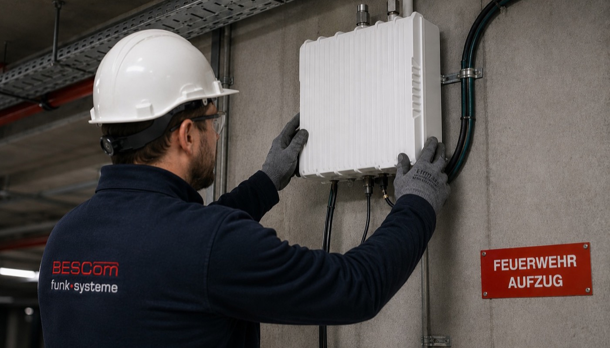

Die Planung ist abgeschlossen, die Komponenten sind ausgewählt – jetzt geht es auf die Baustelle. Was viele Bauherren und Projektverantwortliche unterschätzen: Die Qualität der Installation entscheidet am Ende darüber, ob die BOS-Objektfunkanlage bei der behördlichen Abnahme besteht oder nachgebessert werden muss. Schlechte Kabelverbindungen, falsch positionierte Antennen oder fehlende Dokumentation sind häufige Ursachen für verweigerte Abnahmen – und sie entstehen fast immer auf der Baustelle, nicht am Planungstisch.
Dieser Artikel erklärt, wie die Installation einer BOS-Objektfunkanlage in der Praxis abläuft, wer sie durchführen darf, was bei Neubau und Bestandsgebäude unterschiedlich ist – und welche Details bei der Montage über Erfolg oder Nachbesserung entscheiden.

Wer darf eine BOS-Objektfunkanlage installieren?
Nicht jedes Elektrounternehmen und nicht jeder Systemintegrator darf eine BOS-Objektfunkanlage errichten. Die Anforderungen sind klar geregelt: Planung, Installation und Inbetriebnahme müssen von einem qualifizierten Fachbetrieb durchgeführt werden, der die nötigen Kenntnisse der DIN 14024, der lokalen Feuerwehranforderungen und der eingesetzten BOS-Technologie nachweisen kann.
In der Praxis ist die BODeV-Zertifizierung (Bundesverband der Objektfunk-Dienstleister e.V.) der anerkannte Qualitätsnachweis. BODeV-zertifizierte Betriebe verpflichten sich auf einheitliche Qualitätsstandards, regelmäßige Schulungen und normkonforme Ausführung. Viele Feuerwehren und Baubehörden erkennen ausschließlich Arbeiten von BODeV-Mitgliedern als abnahmefähig an.
Wie läuft die Installation Schritt für Schritt ab?
Eine professionell durchgeführte BOS-Installation folgt einer festen Reihenfolge. Abweichungen von dieser Reihenfolge – etwa das Verlegen von Kabeln vor der Festlegung der Komponentenpositionen – sind eine der häufigsten Ursachen für spätere Korrekturarbeiten.
-
Baustellenbegehung und Abgleich mit Planungsunterlagen
Vor dem ersten Handgriff prüft das Installationsteam, ob die realen Gegebenheiten auf der Baustelle mit den Planungsunterlagen übereinstimmen. Wurden Schächte wie geplant ausgeführt? Sind vorgesehene Kabeltrassen zugänglich? Gibt es Kollisionen mit anderen Gewerken? Abweichungen werden vor Installationsbeginn dokumentiert und ggf. mit dem Planer abgestimmt. -
Montage der Außenantenne
Die Außenantenne empfängt das BOS-Signal von der nächstgelegenen TETRA-Basisstation und übergibt es an den Repeater. Ihre Position ist entscheidend: Sie muss freie Sicht zur Basisstation haben, stabil befestigt und blitzschutztechnisch integriert sein. Eine schlecht positionierte Außenantenne kann den Eingangspegel des gesamten Systems dauerhaft begrenzen – auch wenn alle anderen Komponenten einwandfrei arbeiten. -
Verlegung der Koaxialkabel und Kabeltrassen
Die Kabel verbinden Außenantenne, Repeater, Verteiler und Innenantennen. Dabei gilt: Koaxialkabel haben definierte Biegeradien, die nicht unterschritten werden dürfen – jede scharfe Biegung erhöht die Dämpfung und verfälscht den Pegelplan. Kabelschuhe und Steckverbinder müssen fachgerecht konfektioniert werden; schlechte Verbindungen sind eine häufige Ursache für unklare Messergebnisse bei der Abnahme. In brandschutztechnisch relevanten Bereichen werden funktionserhaltende Kabel (E30/E90) eingesetzt. -
Einbau der Repeater und aktiven Komponenten
Repeater werden in Technikräumen oder gesicherten Schränken montiert. Sie benötigen eine stabile Spannungsversorgung, eine Netzwerkanbindung für die Fernüberwachung und ausreichend Belüftung. Der Einbauort muss so gewählt sein, dass die Anlage im laufenden Betrieb zugänglich und wartbar ist. -
Montage der Innenantennen
Die Innenantennen verteilen das verstärkte BOS-Signal innerhalb des Gebäudes. Ihre genaue Position folgt dem Planungsgrundiss – Abweichungen von mehr als einem Meter können die berechnete Flächendeckung beeinträchtigen. Antennen in Flucht- und Rettungswegen müssen vandalismussicher montiert und optisch mit dem Gebäude abgestimmt sein. -
Aufbau der Notstromversorgung
DIN 14024 fordert mindestens 30 Minuten Betrieb bei Netzausfall. Die Akkueinheiten werden entsprechend dem errechneten Leistungsbedarf dimensioniert und eingebaut. Anschließend wird die tatsächliche Kapazität unter Last geprüft – nicht nur die Nennkapazität des Akkus. -
Inbetriebnahme und Erstmessung
Nach dem vollständigen Aufbau wird die Anlage in Betrieb genommen und eine Erstmessung durchgeführt. Dabei werden an allen geplanten Messpunkten die Signalpegel erfasst und mit dem Pegelplan verglichen. Abweichungen werden analysiert und – sofern notwendig – durch gezielte Anpassungen korrigiert, bevor der Abnahmetermin mit der Behörde stattfindet.
Neubau vs. Bestandsgebäude: Was ist anders?
Die technischen Anforderungen an die Anlage sind bei Neubau und Bestandsgebäude identisch – die Installationsbedingungen unterscheiden sich jedoch erheblich.
| Aspekt | Neubau | Bestandsgebäude |
|---|---|---|
| Kabelwege | Schächte und Trassen offen, Integration in laufenden Ausbau möglich | Wände und Decken geschlossen – Stemm- und Bohrarbeiten erforderlich |
| Koordination | Abstimmung mit anderen Gewerken auf der Baustelle | Arbeiten im laufenden Betrieb, Abstimmung mit Nutzern und Verwaltung |
| Installationszeit | Geringer, da offene Baustruktur zugänglich ist | Höher, da Öffnungen, Wiederherstellung und Schutzvorkehrungen nötig sind |
| Kosten | Geringer – Kabelwege kostengünstig integrierbar | Höher – Aufwand für Öffnungen und Wiederherstellung |
| Betriebsunterbrechung | Gebäude noch nicht genutzt – keine Einschränkungen | Installation muss um laufenden Betrieb herum geplant werden |
| Überraschungen | Selten – Baustruktur entspricht Planung | Häufig – verborgene Leitungen, veränderte Grundrisse, Asbest |
Bei Bestandsgebäuden ist eine sorgfältige Voruntersuchung besonders wichtig. BESCom führt vor der Installationsplanung in Bestandsobjekten immer eine detaillierte Begehung durch – auch um verborgene Hindernisse zu identifizieren, bevor sie auf der Baustelle zum Problem werden.
Kritische Details, die über die Abnahme entscheiden
Die meisten Abnahmemängel sind keine grundsätzlichen Planungsfehler – sie entstehen durch handwerkliche Ungenauigkeiten, die sich im Messergebnis niederschlagen. Die häufigsten:
Steckverbinder und Kabelkonfektionierung
Jede Koaxialverbindung ist ein potenzieller Dämpfungspunkt. Schlecht konfektionierte Steckverbinder – mit Lufteinschlüssen, nicht vollständig eingesteckten Innen- oder Außenleitern – können den Signalpegel lokal um mehrere Dezibel reduzieren. Das ist auf der Baustelle mit bloßem Auge nicht sichtbar, beim Abnahmemessgerät jedoch sofort erkennbar.
Antennenpositionierung
Innenantennen, die aus ästhetischen oder handwerklichen Gründen von der geplanten Position abweichen, verändern die Versorgungsgeometrie. Besonders kritisch: Antennen, die hinter Metallverkleidungen, Doppelböden oder abgehängten Decken verschwinden – das dämpft das Signal erheblich und führt zu Funklöchern.
Erdung und Blitzschutz
Die Außenantenne muss normkonform in das Blitzschutzsystem des Gebäudes integriert sein. Fehlt diese Verbindung, verweigert die Feuerwehr die Abnahme – unabhängig davon, wie gut die Anlage funktioniert.
Beschriftung und Kennzeichnung
DIN 14024 fordert, dass alle Komponenten eindeutig beschriftet sind – Repeater, Verteiler, Kabel und Antennen. Fehlende oder unleserliche Kennzeichnungen führen zuverlässig zu Mängellisten beim Abnahmetermin.
Dokumentation der Ist-Situation
Die Revisionsunterlagen müssen die tatsächlich ausgeführte Installation zeigen – nicht den ursprünglichen Planungsstand. Abweichungen, die auf der Baustelle entstehen, müssen nachgepflegt werden. Fehlende oder veraltete Revisionspläne sind einer der häufigsten Abnahme-Stolpersteine.
Koordination mit anderen Gewerken
BOS-Anlagen werden in Gebäude gebaut, in denen gleichzeitig Elektriker, HLKS-Techniker, Trockenbauer und Maler arbeiten. Fehlende Abstimmung zwischen diesen Gewerken ist eine häufige Ursache für vermeidbare Mehrkosten:
- Elektriker: Spannungsversorgung für Repeater und Ladeeinheiten muss zeitlich abgestimmt sein – und auf separaten Stromkreisen ohne RCD liegen, wenn die Norm das fordert.
- Trockenbauer: Antennen, die vor dem Schließen der Decken montiert werden müssen, brauchen klare Übergabetermine.
- Brandschutz: Kabeldurchführungen durch Brand- und Rauchabschnitte müssen mit zugelassenen Abschottungssystemen verschlossen werden – das ist Brandschutzaufgabe, aber BOS-Monteure müssen die Positionen koordinieren.
- IT/ELT: Die Netzwerkanbindung für die Fernüberwachung des Repeaters muss rechtzeitig bereitstehen.
BESCom koordiniert diese Schnittstellen aktiv – nicht als Nebenaufgabe, sondern als fester Bestandteil des Installationsprozesses.
Inbetriebnahme und Vorabnahme: Was vor dem behördlichen Termin passiert
Zwischen dem Abschluss der Montage und dem offiziellen Abnahmetermin der Feuerwehr liegt die interne Inbetriebnahme – der vielleicht wichtigste Schritt für einen reibungslosen Abnahmetermin.
BESCom führt nach jeder Installation eine vollständige interne Abnahmemessung durch, bevor die Behörde eingeladen wird. Dabei werden:
- Alle im Pegelplan definierten Messpunkte mit kalibriertem Equipment nachgemessen
- Die Messwerte mit dem Planungspegelplan verglichen – Abweichungen werden analysiert und behoben
- Die Notstromversorgung unter Last getestet
- Die Fernüberwachungsfunktionen auf Vollständigkeit geprüft
- Die Revisionsdokumentation auf Vollständigkeit und Richtigkeit geprüft
Erst wenn alle Punkte bestehen, wird der behördliche Abnahmetermin angesetzt. Das Ergebnis: BESCom-Anlagen bestehen die Feuerwehrabnahme im ersten Anlauf.
Welche Dokumentation entsteht bei der Installation?
Die Installationsdokumentation ist nicht nur bürokratische Pflicht – sie ist die langfristige Grundlage für Wartung, Reparatur und behördliche Nachweisführung. Eine vollständige Übergabedokumentation enthält:
| Dokument | Inhalt und Zweck |
|---|---|
| Revisionsplan | Grundrisspläne je Geschoss mit tatsächlicher Position aller Komponenten und Kabelverläufe – as-built, nicht as-planned |
| Inbetriebnahmeprotokoll | Messwerte aller Messpunkte aus der internen Erstmessung, verglichen mit dem Planungspegelplan |
| Komponentenliste | Alle eingebauten Bauteile mit Hersteller, Typ, Seriennummer und Einbauort |
| Akkuprüfprotokoll | Messung der tatsächlichen Kapazität unter Last – Nachweis der 30-Minuten-Anforderung |
| Abnahmeprotokoll der Feuerwehr | Behördliches Dokument nach erfolgter Abnahme – Pflichtbestandteil der Gebäudeakte |
| Wartungsplan | Prüffristen, vorgeschriebene Prüfschritte und Zuständigkeiten gemäß DIN 14024 und DGUV |
BESCom übergibt diese Dokumentation vollständig in digitaler und gedruckter Form – direkt verwertbar für Bauakte, Facility Management und künftige Wartungsdienstleister.
Wie lange dauert die Installation?
Die Installationsdauer hängt von der Gebäudegröße, der Zugänglichkeit und dem Koordinationsaufwand mit anderen Gewerken ab. Als Orientierung:
| Objekttyp | Typische Installationsdauer |
|---|---|
| Kleine Tiefgarage (bis 3.000 m²) | 1–2 Installationstage |
| Mittelgroßes Gewerbeobjekt (3–5 Geschosse) | 3–5 Installationstage |
| Größeres Büro- oder Wohnhochhaus | 1–3 Wochen je nach Zugänglichkeit |
| Einkaufszentrum oder Krankenhaus | 3–8 Wochen inkl. Koordination laufender Betrieb |
Hinzu kommen in der Regel 2–4 Wochen zwischen Fertigstellung und behördlichem Abnahmetermin – abhängig von der Verfügbarkeit der Feuerwehr. BESCom koordiniert diesen Termin und meldet die Anlage abnahmefertig an.
Fazit: Installation ist Handwerk – aber kein gewöhnliches
Die Installation einer BOS-Objektfunkanlage ist kein Elektrohandwerk im üblichen Sinne. Sie verlangt Normkenntnis, messtechnische Kompetenz, Erfahrung in der Koordination auf Baustellen – und die Bereitschaft, jeden Handgriff so auszuführen, dass er beim Abnahmetermin standhält.
Wer diese Kompetenz im eigenen Betrieb vereint, liefert Anlagen, die beim ersten Termin abgenommen werden, vollständig dokumentiert übergeben werden und über Jahre störungsfrei laufen. BESCom tut das seit über 35 Jahren – in Hamburger Hochhäusern, Tiefgaragen, Krankenhäusern und Industrieanlagen.
💡 Planung und Installation aus einer Hand: Wer BESCom mit Planung und Installation beauftragt, profitiert davon, dass die Monteure die Planungsunterlagen kennen – und wissen, warum jede Entscheidung so getroffen wurde. Das verhindert Abweichungen, beschleunigt die Installation und sichert die Abnahmefähigkeit.
→ Installationsauftrag anfragen
Wir übernehmen die Installation normkonform, koordinieren alle Gewerke und liefern die vollständige Übergabedokumentation – inklusive Begleitung beim behördlichen Abnahmetermin.